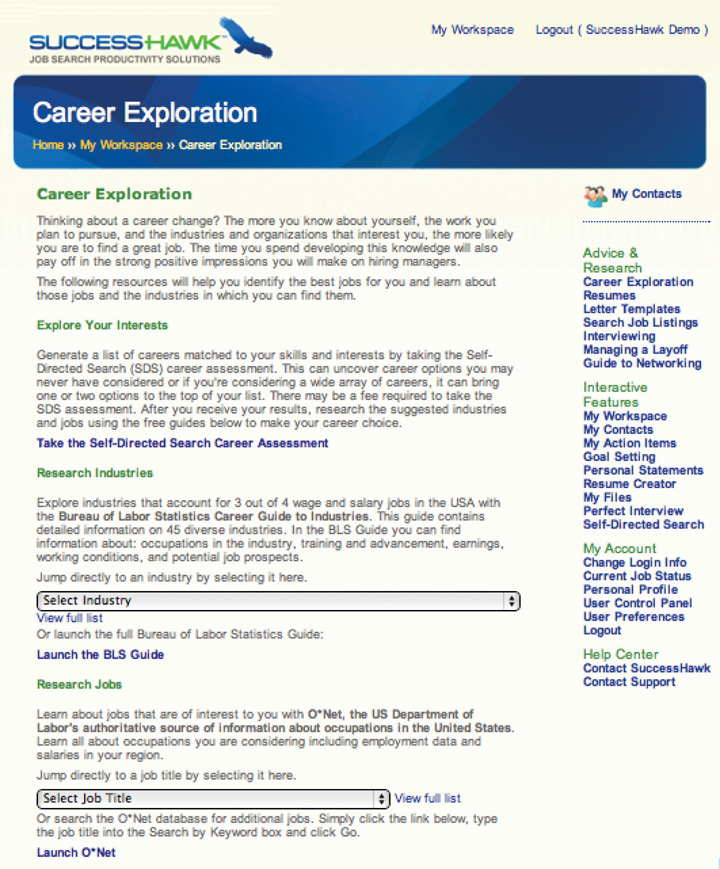

6.5 Chapter Review and Exercises
Conducting in-depth research is critical to all stages of your job search. The information you learn about your desired jobs, organizations, and industries helps to confirm the targets you selected from step 1. The research helps you better position your marketing from step 2. It enables you to land and conduct strong informational interviews, which is an important part of networking and interviewing in step 4. Research gives you data to troubleshoot your search as needed in step 5. It also gives you data to negotiate in step 6. Research is overlooked by many job seekers, so it is a powerful way to differentiate yourself as a candidate with genuine interest, commitment, and knowledge.
Chapter Takeaways
- Job seekers need to research information about specific jobs, specific organizations, and the overall industry.
- The information you gather enables you to confirm your targets from step 1 and tailor your marketing from step 2 to match the jobs, organizations, and industries you want.
- Job-specific research resources include job boards, trade and professional associations, biographies and business and news publications, and social media and online communities.
- For organization research, you also want to look at financial statements available via investor relations of a specific company, the SEC, the IRS, or aggregators such as Dun & Bradstreet, Hoovers, or Guidestar.
- For industry research, in addition to the resources listed for job and organization information, you want to look at industry associations.
- For ongoing news, set a Google Alert for keywords and specific organization names.
- Research is helpful in all stages of your search.
- Research can drive your search forward to networking meetings and interviews.
- Research into the hiring departments and managers can help you access jobs that aren’t posted—the hidden job market.
- Informational interviews confirm and refine existing research. They are not a shortcut or replacement for your own research.
- The best informational interviews are two-way exchanges of information where you share what you have learned, but also get to know the interviewee, their background, and their ideas.
- Try to get candid feedback on your competitiveness as a candidate. It is easier to get this candid feedback during informational interviews than during real job interviews.
- Use your research as a springboard for the interview questions to assure the interviewee that you are an insider and to give them ideas of what to talk about.
- Be polite before, during, and after the interview. E-mail is ideal for requesting an interview and for the thank-you.
- Use your informational interviews to get referrals for additional meetings.
Chapter Review
- Why is research important to the job search?
- In what three areas do you want to focus your research?
- What resources will you use to find information about jobs, organizations, and industries?
- What is the hidden job market?
- How can research help you access the hidden job market?
- Why are informational interviews an important component of research and networking?
- How do you structure informational interview questions for maximum effectiveness?
- What are some sample informational interview questions?
- How do you use informational interviews to get additional meetings?
SuccessHawk: Research Jobs
Learn about jobs that interest you with O*Net, the US Department of Labor’s authoritative source of information about occupations in the United States, including employment data and salaries in your region. To access O*Net, click on “Career Exploration” in the right-hand menu bar under “Advice and Research” and scroll down the page to “Research Jobs.”
SuccessHawk: Research Industries
Use the Bureau of Labor Statistics’s Career Guide to Industries to explore industries that account for three out of four wage and salary jobs in the United States. This guide contains detailed information on forty-five diverse industries, including information about occupations in each industry, training and advancement, earnings, working conditions, and potential job prospects. To access the Career Guide to Industries, click on “Career Exploration” in the right-hand menu bar under “Advice and Research” and scroll down the page to “Research Industries.”
